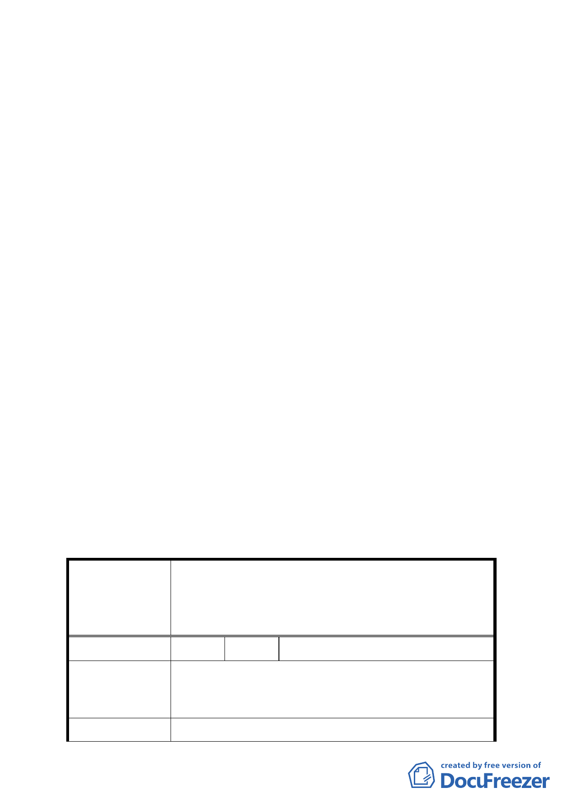

92.1.7.公告實施之計畫規定辦理」以免誤解。
（二）修正後計畫書第 7 頁有關原計畫建築高度規定文字有誤，
應為「以不超過 30 公尺為原則…」。
（三）修正後計畫書第 8 頁，有關停車空間設置標準第（三）之 1
點規定，文字請修正為「依現行『臺北市土地使用分區管
制規則』規定辦理」。
（四）修正後計畫書第 10 頁柒第七點應依圖二規定設置迴廊，非
圖三，文字誤繕請予修正。
（五）修正後計畫書第 10 頁柒、都市設計準則，請比照已公告實
施之「2010 年臺北好好看」都市計畫變更案件，增列「建
築基地應依建築技術規則綠建築專章規定檢討」。
（六）修正後計畫書第 11 頁「拾、其他第三點、本計畫未規定事
項悉依相關法令及原計畫規定辦理」建議修正為「三、本
計畫未規定事項悉依相關法令及 92.1.7 修訂『臺北市基隆
河（中山橋至成美橋段）附近地區細部計畫暨配合修訂主
要計畫案內『基隆河（中山橋至成美橋）附近地區土地使
用分區與都市設計管制要點』』案規定辦理」。
四、其他：都市計畫法第 24 條係屬土地所有權人自提計畫變更之
法源依據，本案申請單位全聯實業股份有限公司非土
地所有權人亦非設定地上權之權利人，相關證明書件
請補附於計畫書後。
五、公民或團體陳情意見審決如後附綜理表。
臺北市都市計畫委員會公民或團體所提意見綜理表
修訂臺北市基隆河（中山橋至成美橋段）附近地區細部
案
名
計畫娛樂區（供娛樂購物中心使用）街廓編號 B2 基地
（中山區金泰段 16-5 地號）土地使用分區管制規定與
都市設計管制要點計畫案
編 號 1 陳情人 陳議員玉梅
目前大彎北段商業區之建物使用現況，大多違規作為
陳 情 理 由 住宅使用。大彎北段之商業區、娛樂區已有部分土地依
現行之法令完成開發建築。
建 議 辦 法 為避免都市計畫變更公告實施後，造成未來有更大量之
-9-